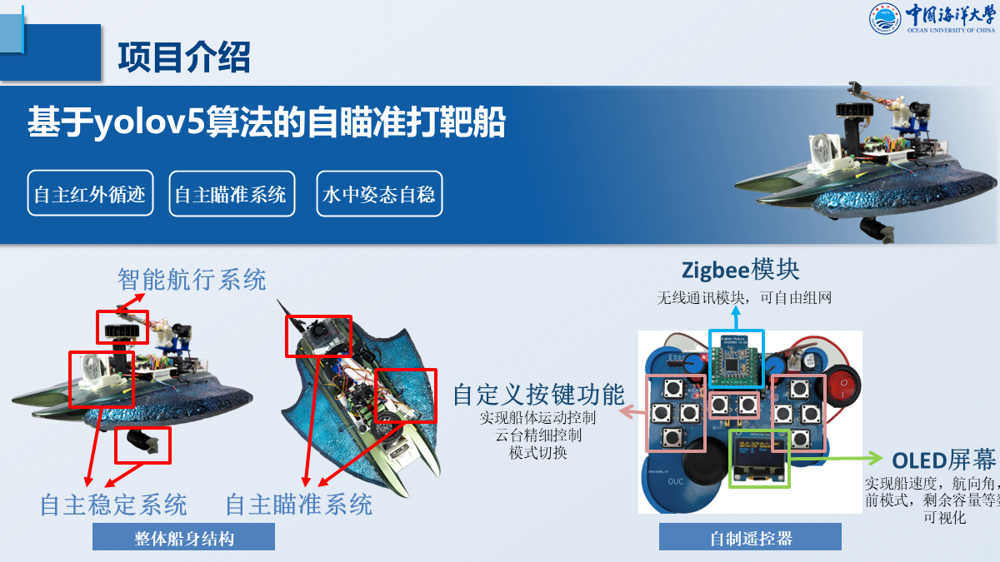
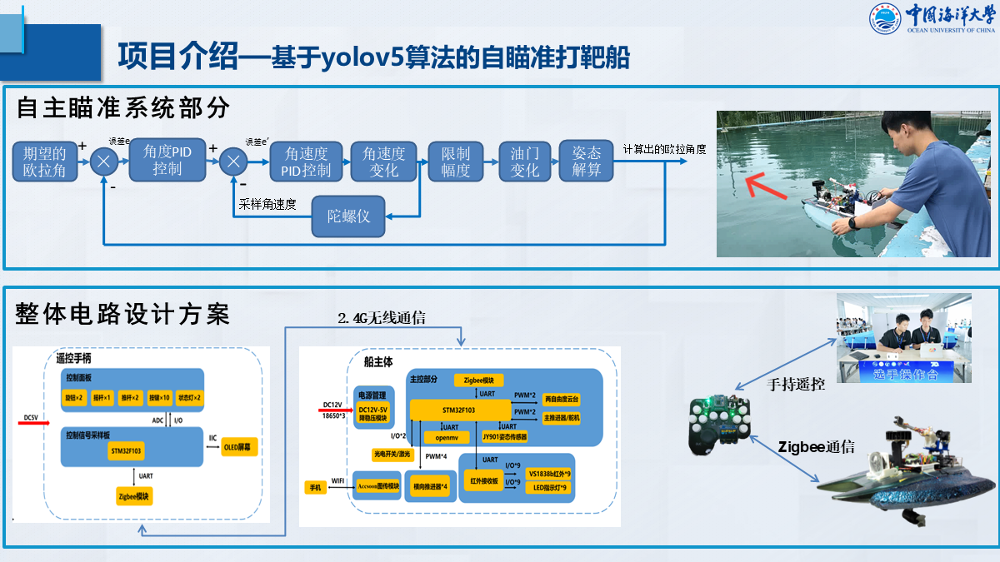

2026–2028 expected
City University of Hong Kong (Dongguan)
MSc in Electrical and Electronic Engineering
Graduate student · Robotics engineering
MSc student in Electrical and Electronic Engineering
City University of Hong Kong (Dongguan)
I work on specialized underwater equipment, UAV systems, electromechanical integration, and embedded control. My work connects mechanism design, electronics, low-level control, and experiments on physical robotic systems.
MSc in Electrical and Electronic Engineering
BEng in Microelectronics Science and Engineering
Research experience · April–August 2026
School of Astronautics, Harbin Institute of Technology · Yimin Zhu’s group
Internship · March–August 2025
Qingdao Haiqiong Automation Technology Co., Ltd.
Project descriptions are concise on this page. Expand an item to view the technical focus and my contribution.
Designed the ground vehicle’s mechanical structure and electronics for air–ground warehouse inspection. Integrated drives, sensors, and actuators; calibrated parameters; and diagnosed faults through staged bench and whole-vehicle tests.
Contribution: repeatable closed-loop line following and vehicle-level integration.


Modelled 3-RPS leveling, integrated STM32 control, and completed full-system testing for high-flow and low-visibility environments. The system combines mobility arrival, leveling, in-situ collection and weighing, stirring, infrared calibration, visual review, and shore-station transmission.
Reported outcome: single-area tank measurement time reduced from 18 hours to 2 hours, with approximately ±4% error against a reference instrument.


Led system planning, team assignments, circuit and mechanical design, and whole-vehicle debugging. Integrated real-time YOLO recognition and line following with motion control on a Zynq-7020 platform.
Recognition and control functions were demonstrated on the complete vehicle; national third prize in the AMD track of the embedded systems competition.


Led circuit design and prototype integration for cleaning while a vessel is moving. The system combines a biomimetic suction crawler, water-injection release control, tactile sensing, and composite cleaning actuators.
Contribution: underwater adhesion, crawling, release control, and system-level electronics integration.

Co-developed an autonomous targeting boat using YOLOv5. Designed STM32F103 boat and handheld-controller electronics, Zigbee/2.4-GHz communication, custom controls, and OLED feedback; implemented attitude estimation with cascaded angle and angular-rate PID control.
Validated stabilized targeting in water trials and earned National First Prizes at the 12th and 14th National Marine Vehicle Design and Manufacturing Competitions.


China International College Students’ Innovation Competition · National Silver Award
International Ocean Engineering Equipment Innovation Competition · Grand Prize
National University Students’ Water Conservancy Innovation Design Competition · Grand Prize
China International Underwater Robotics Competition · Grand Prize
National Ocean Vehicle Design and Manufacturing Competition · First Prize ×3; Second Prize ×3
National Energy Conservation and Emission Reduction Competition · Third Prize ×2
National Embedded Chip and System Design Competition, AMD Track · Third Prize
Invention application accepted · first inventor · CN202311332460.X
Utility model granted · second inventor · ZL 2023 2 2761470.7
PCB design · mechanical integration · embedded systems · STM32 · FPGA / Zynq · YOLO acceleration · Ubuntu / ROS · SolidWorks · JLCEDA · Keil 5 · VS Code · TeXstudio
I am interested in doctoral research at the intersection of robotics hardware, underwater systems, aerial manipulation, and field robotics, with emphasis on mechanism design, embedded control, and reliable experimental validation.
For research collaboration, doctoral opportunities, or engineering discussion: